Sketches from the Field
sketch an outline of a leaf (on the black), then click generate to grow your leaf ↓
field notes · part two
Round one, revisited.
The last time I wrote on this blog, I asked a simple question: what does it take to teach a machine to see what we overlook? And what can teaching a machine, in turn, teach me about life around us? I scanned 300 leaves from an invasive shrub, taught a small pix2pix model how to turn a simple sketched outline into a generated leaf, and as the epochs turned a blurry leaf shape and green color appeared — but still, no actual veins. No hallucinated life. I notably described it as looking like sh*t (or better yet, a green smear), but as a creative technologist, I found meaning and wonder in my first brave attempt at training a tiny ml model.
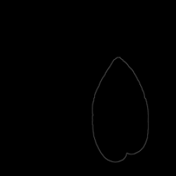
input real leaf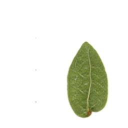
it guessedI also reflected on the culture we've built around image generation: we obsess over the output and totally forget the unglamorous grunt-work of the input. This project became much bigger than the ghastly output I created. It became a series of interesting questions and provocations, and so I knew my work was unfinished.
The part two you're about to read has been me settling back into the guiding question that started this project — to find new answers and possibly entirely new questions. This post picks up right where part one left off. If you want the full story of how I got here — from gathering leaves, scanning them by hand, the training config, what an epoch even is — it's all in the first blog post.

What's different this time.
A few things changed in this second training attempt where I started completely fresh:
- The dataset got veins. Instead of feeding the model bare outlines of a leaf and asking it to guess the entire inside of the leaf (which proved near impossible), dataset A now includes the actual vein network traced out of each scan — the midrib and a few side veins. The goal: give the model enough of a vein structure to learn from, so that when it generates a leaf from a new sketch, it hallucinates the vein network its own. This meant every one of my 300+ leaves needed a matching vein sketch, not just a silhouette. Pulling this off was very high drama, but fun. I'll talk about that in the next section or two.
- The sketch tool also got a rebuild. The tool above — where you draw and hit generate — got a sweet little upgrade. Instead of using the thin-lined single brush the template came with, I built an entirely new set of brushes. One brush for the outline, another for veins, each with its own weight, its own softness, its own organic movement — meaning your lines may not look completely straight, and that's on purpose. The training data has a bit of an organic feel, so the brushes are mimicking that.
- The model trained longer. More epochs means more passes through the data, more chances for the model to refine its guesses and push past the early blurry approximations toward something with actual structure. I was carefully considering overfitting as the training went on. But with a harder mapping to learn this time, the extra training time was beneficial.
Mapping the veins.
Before I get into how I did this, I want to say why it mattered. I came with a question: if I give the model the same leaf outline any adult or child would draw when you say draw me a leaf — a silhouette and a few veins, nothing more — can it imagine the rest of the leaf's structure on its own? Can it hallucinate something that feels real? That mimics life?
We often describe hallucinations as a bad thing — a bug, a failure, something to correct. But I wanted to embrace them as the unmappable randomness found on earth: the same mystery that makes no two leaves, no two snowflakes, no two waves exactly alike. Legacy Russell's Glitch Feminism reminds us to embrace glitches — these departures from reality can be exciting. I wanted this model to hallucinate. I just also wanted it to hallucinate convincingly — within the logic of what a leaf actually is, reaching toward something real even while inventing it. That tension, between faithful and free, between overtrained and generative, was the tightrope I was balancing.
Tracing veins by hand was a non-starter, but mapping veins with computer vision wasn't a walk in the park either. In the first round of the project I did mere outlines, and well, outlines are one very simple closed loop. But actual veins branch, they're different sizes — from extra small to main veins — and they're also inconsistent leaf to leaf. So I built something that could find them for me — a computer vision pipeline that reads a scanned leaf and traces its own vein network back out, automatically.
The first version used a ridge filter (Sato — normally used to find blood vessels in medical scans; leaf veins aren't so different) to pick out the thin lines running through the leaf tissue, threshold them into a mask, and clean up the noise. Skeletonized down to one-pixel-wide lines, it was counting 25–50 separate veins, then had to prune anything too short to count as a real side vein. I watched it make these calls color-coded in real time: green for kept, red for discarded, blue for the midrib. It figured it out — but not without a cost.
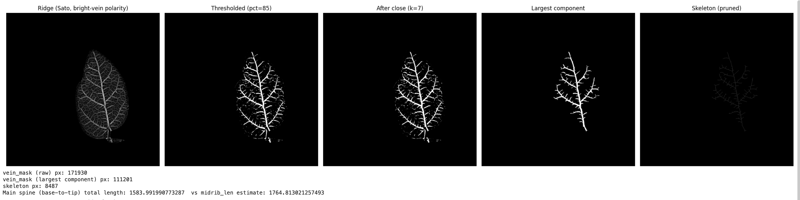
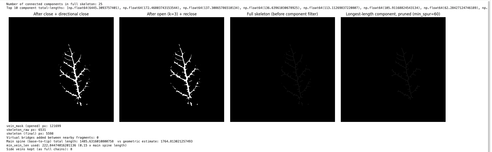
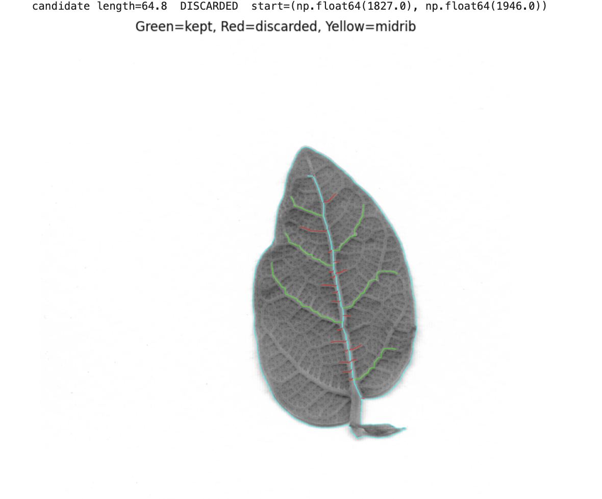
I ran the math. The script I set up would take 36 hours of computing time to run. Another non-starter. So I scrapped the 5+ hours I spent on this and started over again.
The new pipeline had to find not just veins, but the right veins — the ones a person would actually draw. When you sketch a leaf, you don't trace every capillary. You trace structure: the midrib stem to tip, a handful of side branches fanning out. That human-scaled version of a leaf is what the training data needed to match. So the pipeline was rebuilt around that logic: directional closing kernels to bridge gaps along a vein's own direction without merging nearby parallel veins, skeletonization, then a graph-theory walk from base to tip to find the midrib, and outward from there to find side veins. Anything shorter than 15% of the midrib — the fine capillaries no one draws from memory — is dropped entirely. Four side veins kept. The whole thing runs in about four hours.
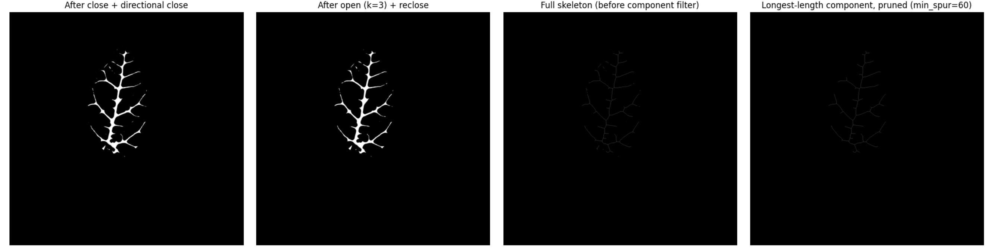
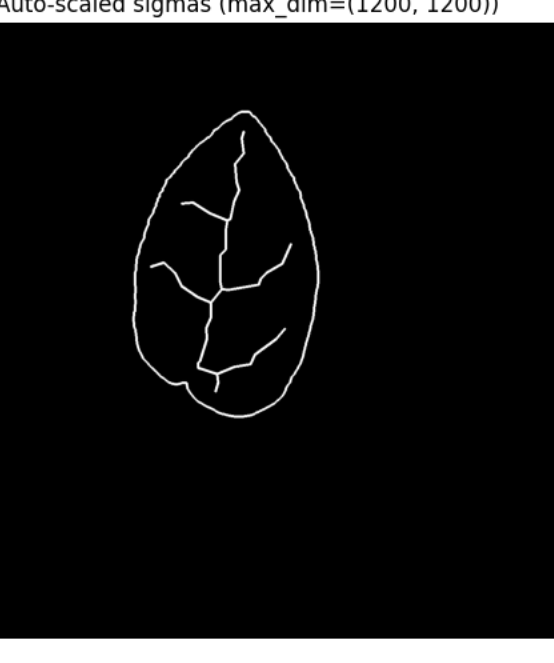
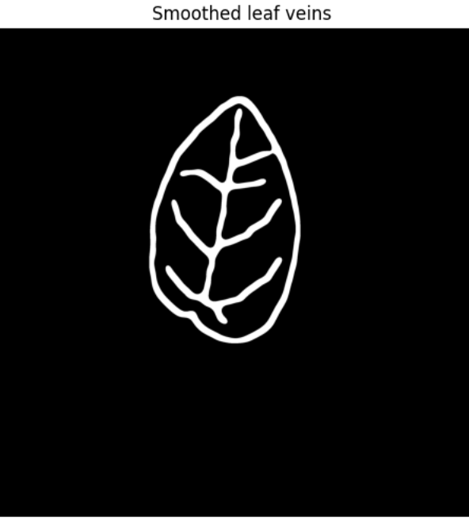
Every threshold in here is still a number I picked by looking at the output and deciding that looks right. The graph theory didn't make it more objective. It just made it fast enough to be worth doing. Which is maybe the whole project, twice over — I had to build a smaller machine just to find the veins I already knew were there, and even that machine needed my constant judgment to tell noise from structure. Overlooked, then found, then argued with.
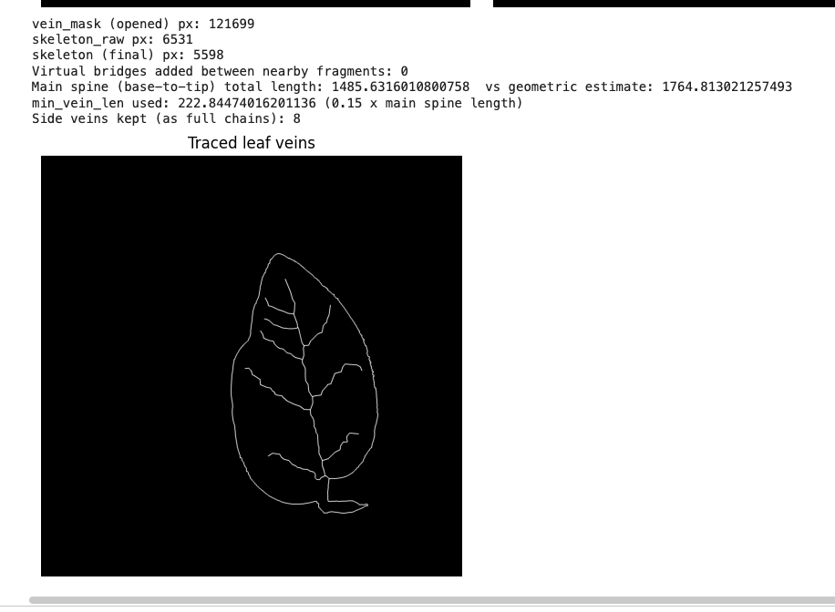
Foraging Data by Hand.
Every leaf behind this project was picked by hand, one at a time, from a single invasive vine — creeping fig (Ficus pumila) — eating a fence near where I live. I chose it partly because its abundance and invasiveness made it an easy choice vs experimenting on native plants.

Sure, it's different, but not uncomplicated. As a hobby ecologist, the questions I face in my own everyday harvesting practice were bubbling up on this day too — even though I wasn't foraging fruit at all. I was data foraging.
- What data do we ignore in our everyday lives?
- What data exchange am I making?
- What data am I extracting?
- Why does abundance or availability grant permission?
The logic that abundance gave me permission to take a lot of leaves started to trouble me. These are the same logics used to scrape the web for models. People say, “well it's there, it's available in the public sphere — why can't I use it?” But abundance isn't the same thing as permission. A plant doesn't stop being a living thing that we're responsible to because it's unwanted, unpolished, or complicated. This taught me that how I forage plants can also inform how I forage data.
Robin Wall Kimmerer's writing on the Honorable Harvest immediately came to mind — the idea that taking from a living thing comes with obligations: ask first, take only what you need, use everything you take, give something back. My own family has fished, farmed, and foraged for generations, and there's a specific kind of obligation that suddenly appears when you gather something yourself, by hand, rather than having it arrive already gathered and packaged for you. You can't help but notice what you're taking. Which means you can't help but ask what you owe it.
I don't think “data” is usually allowed to be a word that carries responsibility. We call it collection, we call it web scraping, or click workers — and either way we mostly look at what comes out the other end — the model's output — without much thought for what was asked of the input to make it possible. Dataset A did a lot of quiet, unglamorous work in this project, but I hope that while using the tool, you remember that it once was a real leaf.
So on my quest of harvesting this invasive plant, I decided I wasn't only there to scrape or take data, but to be in relationship with it — to properly learn from it. By doing this, I was able to really grasp my hands around my own data, understand it closely, and understand how ML models are built from the ground up.
So I saved and pressed the 300 leaves I gathered for future preservation of some kind — which may be announced in a part three — and I'm creating 300 short reflections for every leaf taken, so that none of them passed through my hands unconsidered. That's still mostly ahead of me. Maybe that's what a third version of this is for.
Can a machine learn a vein, then dream a new one?
Well yeah, it can, and my first thought when I saw a real-looking, generated leaf was “wow, that's f*cked up.” Because it actually did learn something about vein networks, and it actually kind of looks like a leaf. I find this so interesting, and maybe a little weird and uncanny. But what once felt like a pipe dream in phase one of my project, actually happened this time.
It learned enough of what a vein is — where it sits, how it branches, what texture surrounds it — to generate ones it had never seen, following a hand-drawn suggestion rather than copying a memorized leaf. That's real. It also has a clear blind spot, one I can now name precisely instead of just shrugging at: it doesn't yet trust itself to improvise leaf tissue far from any vein ink. It leans on the veins as scaffolding instead of holding the whole leaf as a concept.
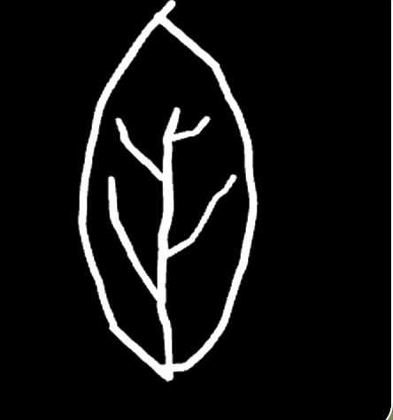
→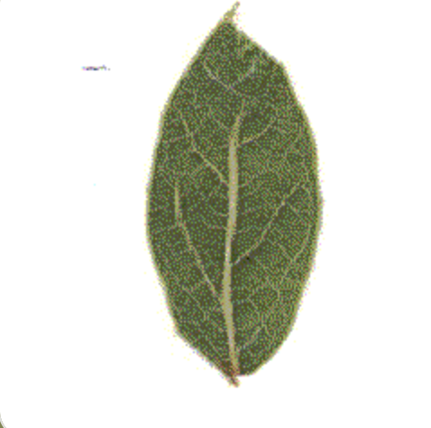
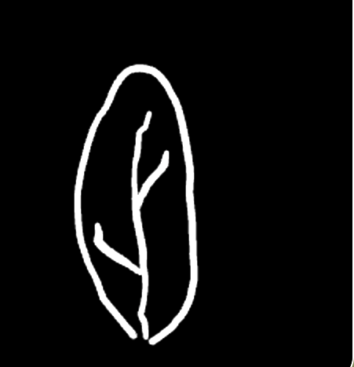
→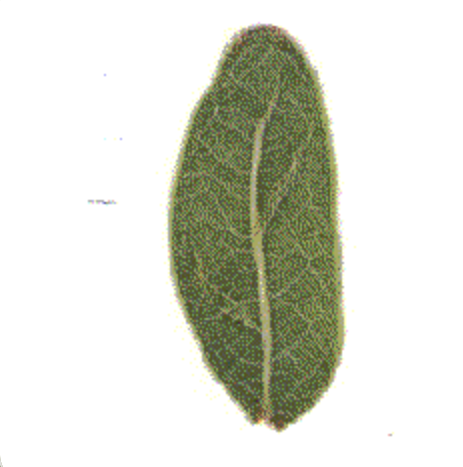
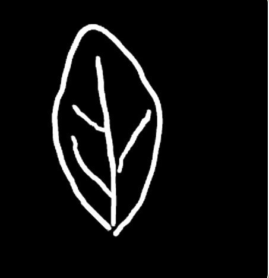
→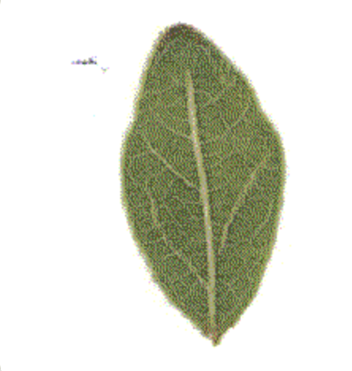
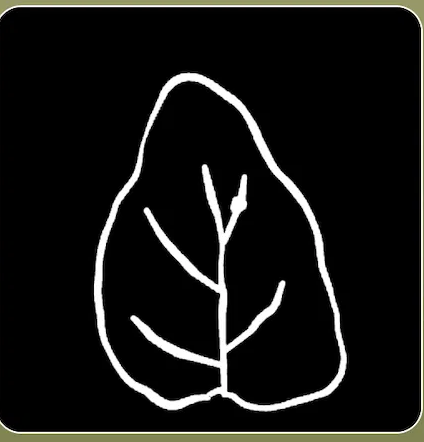
→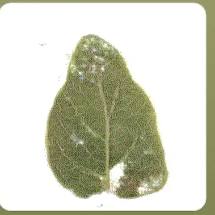
Where it falls short, I can't point to just one cause. Some of it is the technology itself. Some of it is a dataset that's still too small for certain leaf shapes. There may be some overfitting.
More interesting: once, a whole region of a generated leaf dissolved into noisy static — right where my sketch's veins didn't reach. My first theory was that the model wanted a specific number of veins — three to five, it seemed like, depending on size. Testing it closer, the real story was sharper: it was underfitted for that specific leaf shape (fat round ones). I confirmed it the cheap way: added one more vein branch reaching into the empty region, changed nothing else, and the noise vanished.
Which makes me wonder if the attempt itself was ever fully possible. Maybe there's something specific to being human, or being a plant, or being any living thing, that a generated image can gesture at but never actually hold. What comes out the other end of this model is only a visual representation of something far more complex than what you can see. A vein network isn't just lines on a leaf. In the last version of this project I wrote that the leaf's veins hold up the leaf, the leaf holds up the ecosystem, the ecosystem holds up the air we breathe. All this generation can do is represent a sliver of that — it can't actually hold any of it up.
Here's the part I keep sitting with, though. “Hallucination” is usually the word we reach for when a model gets something wrong — when it invents a fact, a citation, a face that isn't there. It's treated as a bug, a thing to be corrected out of the system before anyone trusts it again. I went into this wanting the opposite: for the hallucinating to be the point. Legacy Russell's Glitch Feminism argues something close to this about failure in general — that a glitch isn't just an error, it's a crack where the system's assumptions show, and where something other than what was expected gets a chance to exist. Russell is writing about bodies, gender, and the internet — a different context than a shrub eating a fence, and I don't want to flatten that difference by borrowing her frame too casually. But the core move still travels: what if the places this model breaks down aren't just bugs to patch, but the places worth actually looking?
If a hallucinated vein is a kind of glitch, then the interesting question isn't how do I make it stop doing that — it's what does it mean for this leaf to replicate life? Not copy a photograph of a leaf. Replicate the thing underneath the photograph: the reaching, the branching, the decision (if you can call it that) to grow toward light instead of away from it. A perfect copy wouldn't need to replicate anything — it would just repeat what's already there. The failure is where the attempt at life actually shows up.
Maybe that's the real shape of the metaphor, actually — not just for this model, but for AI more broadly. It succeeds and it fails at the same time, and I think both halves matter. It can't replace the thing that makes a leaf, or a person, fundamentally itself. There's an intelligence embedded in us, and in the vine on that fence, that a machine like this is only ever attempting to replicate from the outside. I think we've underestimated that intelligence for a long time — in ourselves as much as in what grows around us. A model like this one is really just a culmination of a lot of human thought, gathered across space and time and hundreds of hands that trained things before I ever did. That accumulation is a real advantage — it's part of why it can guess at a vein network faster than I ever could by hand. But accumulation isn't the same thing as the intelligence it's drawing from. It's downstream of it, not a replacement for it.
Which brings me to the provocation I don't have an answer for, and don't think I'm supposed to. We talk about machine learning as mimicry all the time — digital twins, models “trained on” us, always implying a slightly better, smarter, faster version of the original. I'm not sure that's the right frame for what happened here. This model isn't exactly mimicking a vein network — it's mimicking what I can see of one, from my own human vantage point. In a sense, it's limited by my own limitations as a human being. It's replicating the aesthetics of a kind of physical, ecological intelligence, a few hundred times, badly, hopefully generatively, in the direction of something alive. Whether that's closer to seeing, or closer to dreaming, or whether those turn out to be the same act from two different angles — I'd rather leave open than resolve.
There's a real complexity to being a living being, and a real mystery to it too. I think machine learning, at its most honest, brings us back to that mystery rather than resolving it. Maybe the useful move isn't ranking intelligences — human above machine, or machine catching up to human — but accepting that there are simply different kinds of intelligence to learn from, without ever forgetting our own. Whatever this model is doing, I don't think it should be measured only by how close it gets to replicating life. Maybe it's more honest, and more useful, as a reflection tool than as a perfect replication.
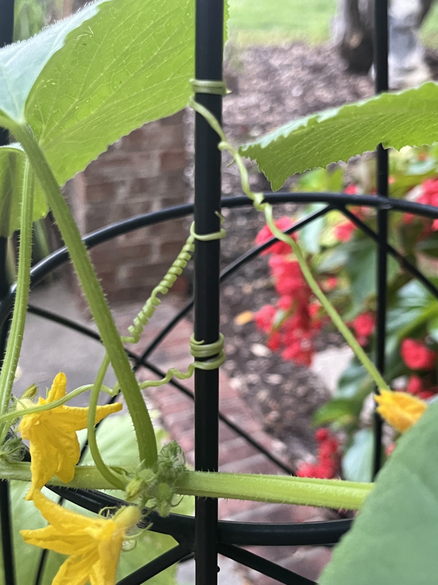
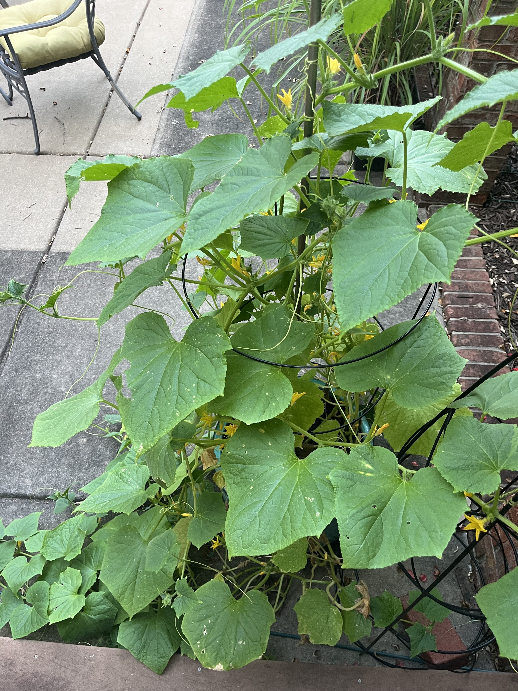
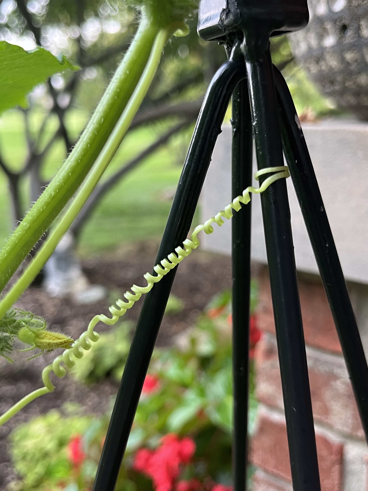
My mom, whose garden I've been spending a lot of time in lately, told me once to just watch what a plant does — how it responds when it's watered, how a vine's tendrils go looking for a fence or a pole to wrap around. That's how you know something is alive, she said: not that it sits there, but that it reaches. I think that's most of what I wanted this model to do. Not render a leaf. Reach toward one — badly, sometimes, unevenly, in a way that shows exactly where it's still guessing. That unevenness isn't the failure mode. It might be the only honest way something without a body could gesture at being alive at all.
open questions
- Is "distance from ink" the actual internal logic, or a convenient story I'm telling myself about a black box?
- What would it take for a model to hold "this is still leaf" as a concept, independent of nearby vein lines?
- How much of what reads as "the model's personality" is really just the dataset's blind spots, politely dressed up?
- Does abundance ever grant permission, or does it just make it easier to stop asking?
- If the glitch is where something gets to exist that wasn't expected — what's actually living in the noise this model makes?
- Is this "gathering data," or is it closer to "data foraging" — and does swapping the word actually change what I owe the thing I'm taking?
next pass
- Add training pairs with sparse, uneven vein coverage on purpose — teach it to be brave about empty space.
- Chase down the recurring smudge — check the source scans for whatever it memorized.
- More epochs. There's always another epoch.
- Maybe: a version of the sketch tool that warns you, gently, if you've left a whole lobe of the leaf without a vein nearby.
- Finish the 300 questions. One per leaf, this time, all the way through.
This html demo of pix2pix is slightly modified from Dongphil Yoo's pix2pix-ml5-demo